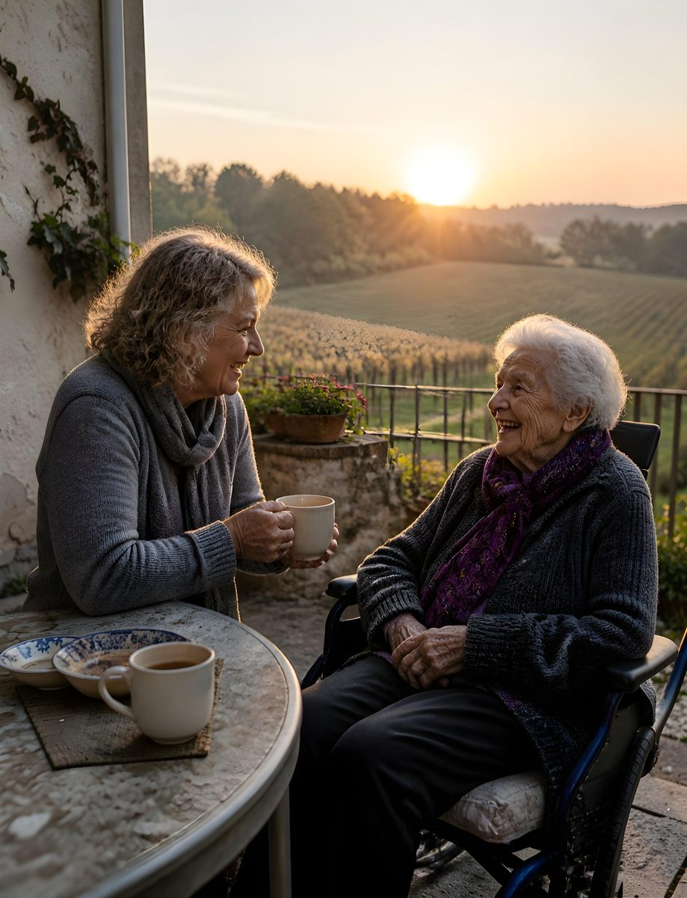
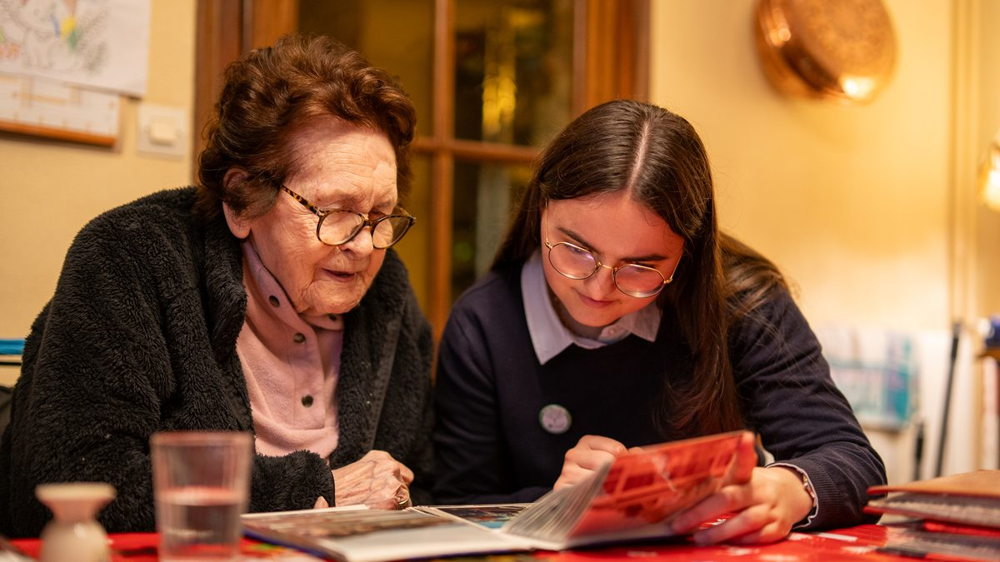

être bénévole à l'ADMR, c'est prendre soin des autres, de son territoire…
En rejoignant l'ADMR, vous choisissez de vous engager pour une cause utile et proche de chez vous. Chaque action menée, chaque projet soutenu, chaque rencontre contribue à améliorer la qualité de vie des habitants de votre commune et à faire vivre la solidarité au cœur de nos territoires ruraux et urbains.
Prendre soin des autres, c'est permettre aux personnes accompagnées de continuer à vivre chez elles et de rester pleinement intégrées dans la vie locale. Prendre soin de son territoire, c'est préserver des services essentiels, renforcer le lien social, participer au dynamisme de la vie associative et contribuer à la création d'emplois locaux.

être bénévole à l'ADMR, une bonne action aussi pour soi !
Parce que l'engagement est une aventure humaine avant tout, être bénévole à l'ADMR, c'est aussi prendre soin de soi ! C'est se sentir utile, développer de nouvelles compétences, faire de belles rencontres, partager ses expériences et s'épanouir dans un collectif porteur de sens.
Le bénévolat à l'ADMR est bien plus qu'un simple engagement : c'est une action concrète au service des autres et du bien commun. En donnant de son temps, on reçoit aussi beaucoup : en sourires et en mercis qui valent mille mots !
